실제 업무와 개인 프로젝트에 AI를 써 본 기록, 그리고 그 경험으로 다시 짜는 도구들을 정리해요.
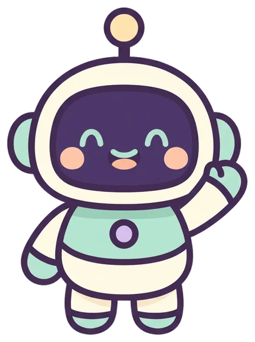
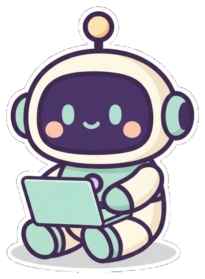
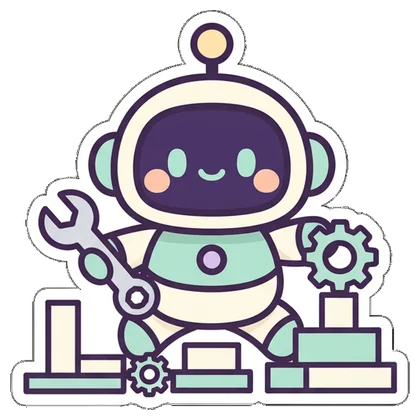
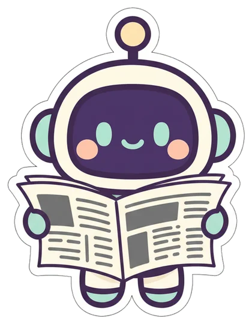
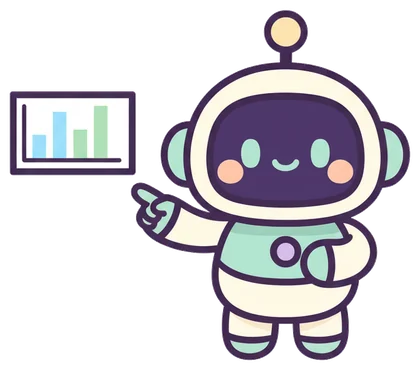
AI 활용 39편 · 프로젝트 개발기 33편
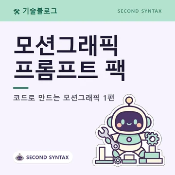
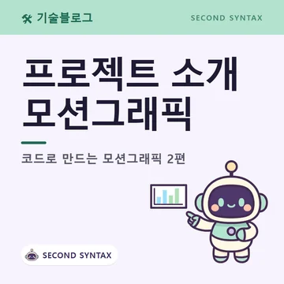
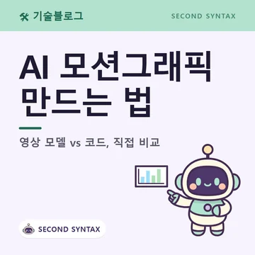
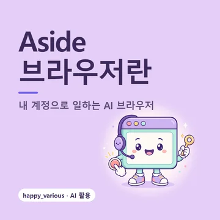
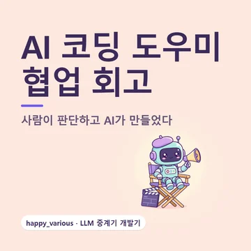
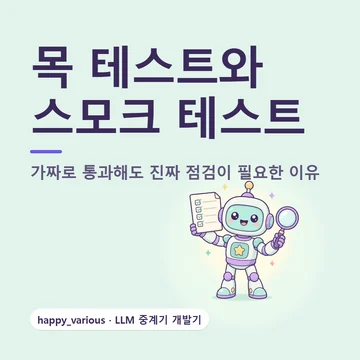
발표 원문을 확인해서 쉽게 정리한 소식 87편
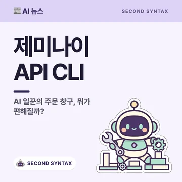
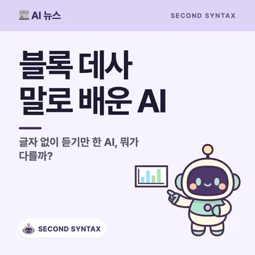
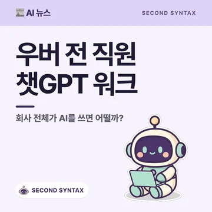
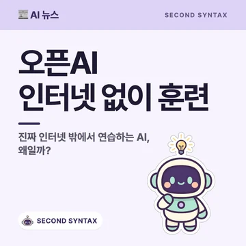
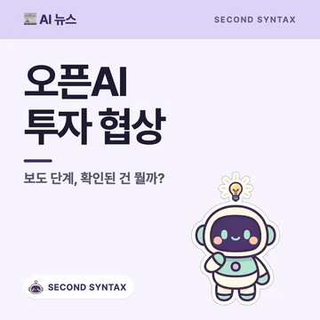
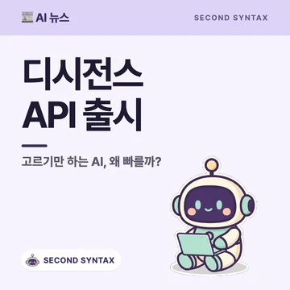
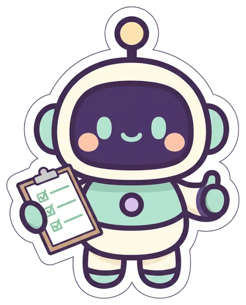
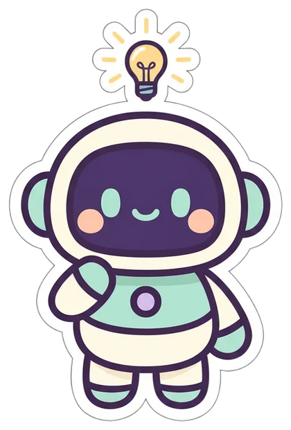
SECOND SYNTAX by WY 는 그동안 만든 개인 프로젝트들을 분해하고 다시 정리해 쓸 만한 제품으로 재구성하는 곳이에요. 그 과정에서 AI를 실제로 써 본 방법과 시행착오를 기술블로그로, 확인한 AI 소식을 뉴스로 남겨요.